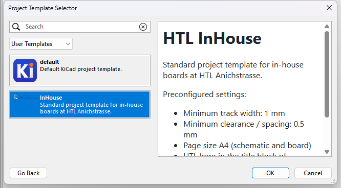
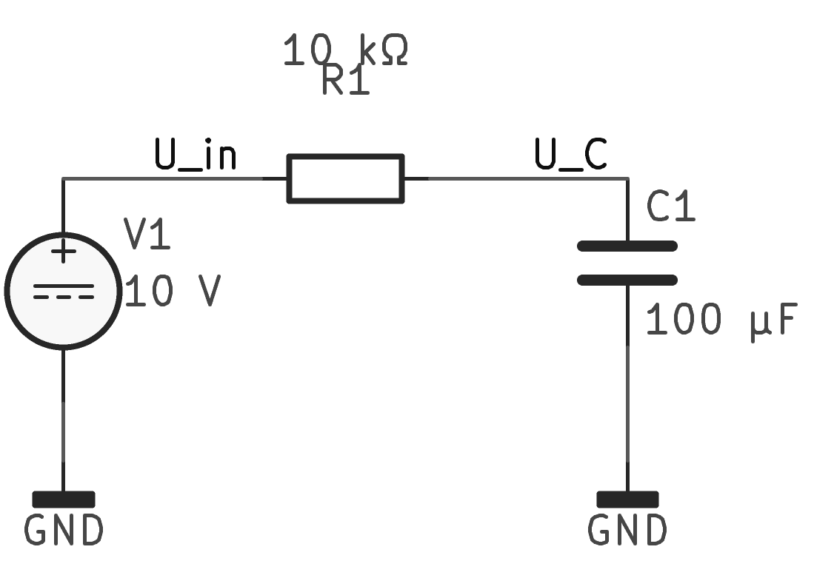
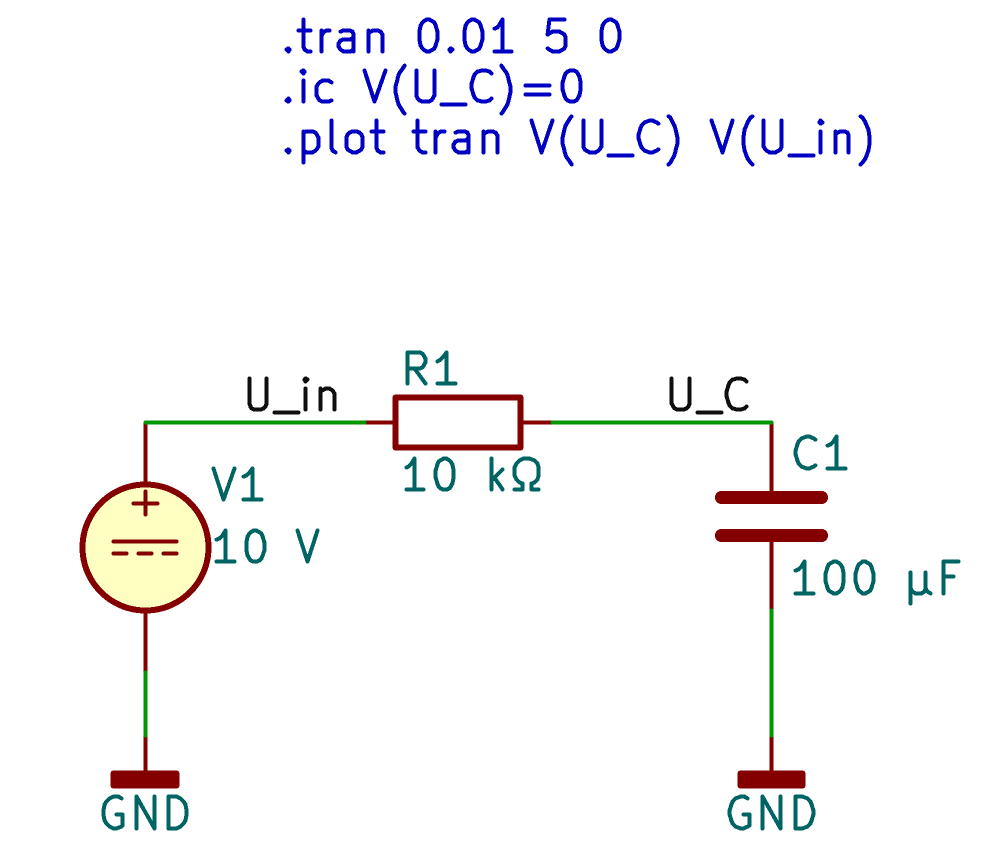
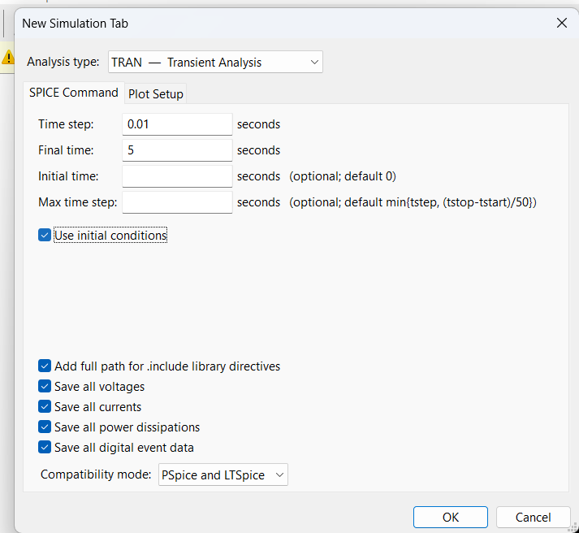
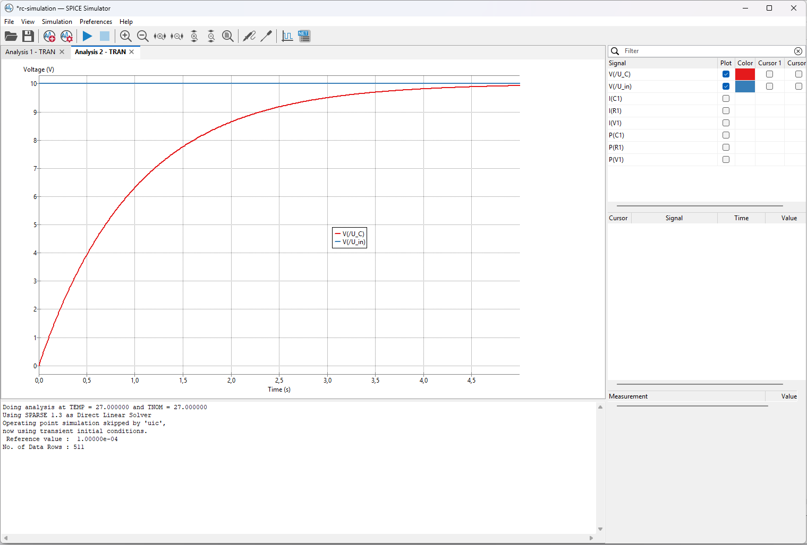
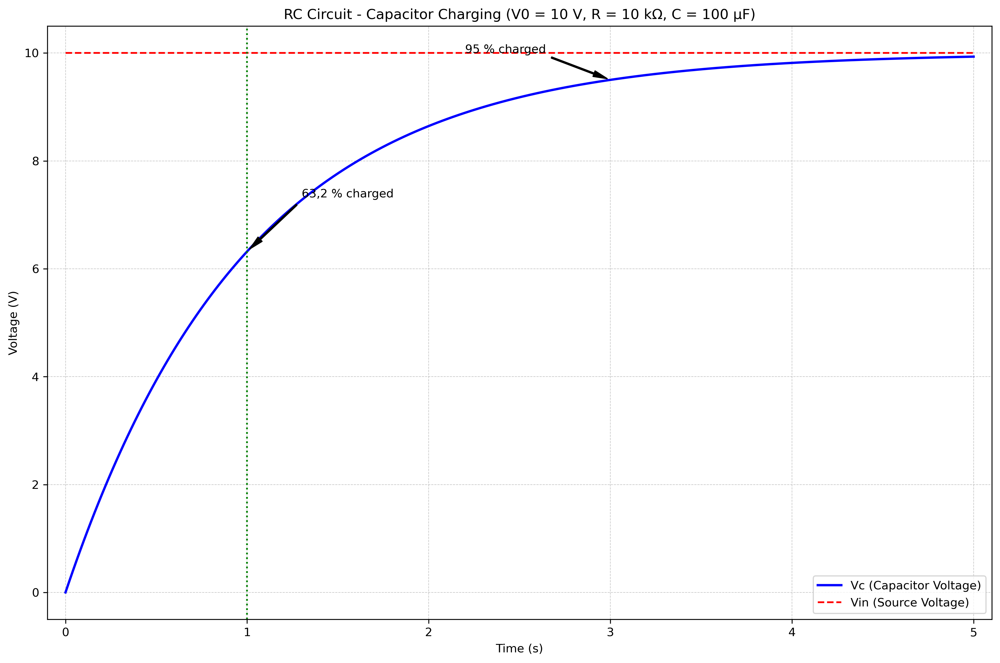
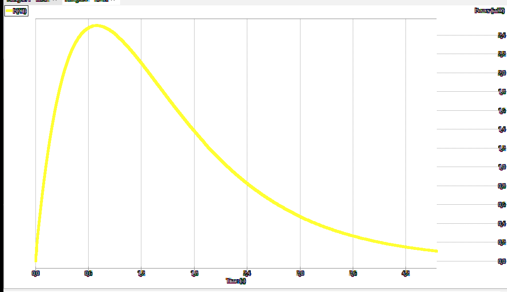

KiCad: Kondensator-Ladung simulieren
Die Simulation von Schaltungen ist einer der stärksten Vorteile von KiCad.
Mit dem eingebauten ngspice-Simulator kannst du das Verhalten deiner
Schaltungen analysieren, bevor du sie baust. In diesem Beitrag zeigen
wir dir, wie du eine einfache RC-Schaltung (Widerstand-Kondensator)
simulierst, um die Ladung eines Kondensators zu untersuchen.
Was du lernst
- Eine RC-Schaltung in KiCad erstellen
- Die Simulation einrichten und durchführen
- Den Ladungsverlauf des Kondensators analysieren
- Die Zeitkonstante verstehen und berechnen
Vorraussetzungen
- KiCad 10 installiert (siehe unseren Installationsguide)
- Grundlegende Kenntnisse der KiCad-Benutzeroberfläche
Schritt 1: Neues Projekt anlegen
- Starte KiCad und erstelle ein neues Projekt: File → New Project
- Vergebe einen Namen, z. B.
rc-simulationund wähle einen Speicherort
- Öffne den Schaltplan-Editor (Eeschema) über den Projektmanager

Schritt 2: RC-Schaltung aufbauen
Komponenten platzieren
- Spannungsquelle (VDC):
- Klicke auf “Place → Add Symbol” (Tastatur: A)
- Suche nach
VDCoderpowerund wähle die Gleichspannungsquelle - Platziere sie auf dem Schaltplan
- Doppelklick auf das Symbol und setze Value = \(10\, \text{V}\)
- Widerstand (R):
- Place → Add Symbol (A)
- Suche nach
RoderDeviceund wähle einen Widerstand - Platziere ihn neben der Spannungsquelle
- Doppelklick und setze Value = \(10\, \text{kΩ}\)
- Kondensator (C):
- Place → Add Symbol (A)
- Suche nach
CoderDeviceund wähle einen Kondensator - Platziere ihn in Reihe mit dem Widerstand
- Doppelklick und setze Value = \(100\, \text{µF}\)
- GND (Masse):
- Place → Add Symbol (A)
- Suche nach
GNDund platziere ihn am unteren Ende
Verbindung herstellen
Verwende das Wire-Tool (W) oder klicke auf die Pins und ziehe Verbindungen:
- Verbinde die Spannungsquelle (+) mit dem Widerstand - Verbinde den Widerstand mit dem Kondensator - Verbinde den Kondensator mit GND - Verbinde die Spannungsquelle (-) mit GND
Deine Schaltung sollte so aussehen:

Für die Simulation ist es hilfreich, den Netzen sprechende Namen zu geben:
- Klicke auf das Label-Tool (L) - Platziere ein Label am Verbindungspunkt zwischen Widerstand und Kondensator - Nenne es \(U_C\) (für die Kondensatorspannung) - Benenne das Netz nach der Spannungsquelle \(U_{in}\)
Schritt 3: Simulation einrichten
Es gibt zwei Methoden um die Simulation einzurichten. Wähle die, die dir lieber ist:
Methode A: SPICE-Direktiven im Schaltplan
Klicke auf Place → Add SPICE Directive (oder Tastatur: S)
Platziere die Direktiven auf dem Schaltplan und füge folgende Zeilen ein:
.tran 0.01 5 0 .ic V(U_C)=0 .plot tran V(U_C) V(U_in).tran 0.01 5 0– Transiente Analyse mit \(0{,}01\, \text{s}\) Schrittweite für \(5\, \text{s}\).ic V(U_C)=0– Anfangsbedingung: \(U_C = 0\, \text{V}\) (Kondensator entladen).plot tran V(U_C) V(U_in)– Plot \(U_C\) und \(U_{in}\)

Methode B: Simulations-GUI
- Gehe zu View → Simulation → Simulation Frame
- Klicke auf Add Signal und wähle die Signale:
V(U_C)– Spannung \(U_C\) am KondensatorV(U_in)– Eingangsspannung \(U_{in}\)I(C1)– Strom \(I\) durch den Kondensator (optional)
- Unter Simulation Settings:
- Analysis Type: Transient
- Stop Time: \(5\, \text{s}\)
- Time Step: \(0{,}01\, \text{s}\)

Schritt 4: Simulation durchführen
- Klicke auf die Play-Schaltfläche (▶) oder gehe zu Simulation → Run Simulation
- KiCad startet ngspice und führt die Simulation durch
- Nach einigen Sekunden erscheint das Ergebnis im Simulationsfenster

Schritt 5: Ergebnisse analysieren
Spannungsverlauf am Kondensator
Du solltest eine exponentielle Kurve sehen, die von \(0\, \text{V}\) auf \(10\, \text{V}\) ansteigt.

Wichtige Zeitpunkte
| Zeit in \(\text{s}\) | \(U_C\) in \(\text{V}\) | % der Endspannung |
|---|---|---|
| 0,00 | 0,0000 | 0,0 % |
| 0,50 | 3,9347 | 39,3 % |
| 1,00 | 6,3212 | 63,2 % |
| 1,50 | 7,7687 | 77,7 % |
| 2,00 | 8,6466 | 86,5 % |
| 3,00 | 9,5021 | 95,0 % |
| 5,00 | 9,9326 | 99,3 % |
Zeitkonstante (\(\tau\)) verstehen
Die Zeitkonstante eines RC-Glieds berechnet sich nach:
\[\tau = R \cdot C\]
In unserem Beispiel:
- \(R = 10\, \text{kΩ}\)
- \(C = 100\, \text{µF}\)
- \(\tau = R \cdot C = 1\, \text{s}\)
Nach 1 τ (1 Sekunde) ist der Kondensator zu 63,2 %geladen. Nach 5 τ (5 Sekunden) gilt er als vollständig geladen (99,3 %).
Stromverlauf
Der Ladestrom folgt einer exponentiellen Abnahme:
- Anfangsstrom (\(t = 0\)): \(I_0 = \frac{U_0}{R} = \frac{10\, \text{V}}{10\, \text{kΩ}} = 1\, \text{mA}\)
- Nach \(1\, \text{s}\): ca. \(0{,}37\, \text{mA}\)
- Nach \(2\, \text{s}\): ca. \(0{,}14\, \text{mA}\)

Schritt 6: Simulation anpassen (optional)
Andere Werte ausprobieren
Ändere die Werte und beobachte, wie sich die Ladezeit ändert:
| Widerstand (\(R\)) | Kapazität (\(C\)) | Zeitkonstante \(\tau\) |
|---|---|---|
| \(10\, \text{kΩ}\) | \(100\, \text{µF}\) | \(1\, \text{s}\) |
| \(10\, \text{kΩ}\) | \(10\, \text{µF}\) | \(0{,}1\, \text{s}\) |
| \(100\, \text{kΩ}\) | \(100\, \text{µF}\) | \(10\, \text{s}\) |
| \(1\, \text{kΩ}\) | \(1\, \text{mF}\) | \(1\, \text{s}\) |
Simulationsdauer anpassen
Für schnellere Schaltungen (kleineres \(\tau\)):
- Stop Time: \(1\, \text{s}\) - Time Step: \(0{,}001\, \text{s}\)
Für langsamere Schaltungen (größeres \(\tau\)):
- Stop Time: \(20\, \text{s}\) - Time Step: \(0{,}1\, \text{s}\)
Theorieteil: Mathematische Grundlagen
Ladespannung
Die Spannung am Kondensator während des Ladevorgangs folgt der Formel:
\[U_C(t) = U_0 \cdot \left(1 - e^{-\frac{t}{\tau}}\right)\]
- \(U_C(t)\) = Spannung am Kondensator zur Zeit \(t\)
- \(U_0 = 10\, \text{V}\) = Versorgungsspannung
- \(t\) = Zeit in \(\text{s}\)
- \(\tau\) = Zeitkonstante (\(R \cdot C\))
Ladestrom
Der Strom während des Ladevorgangs:
\[I(t) = \frac{U_0}{R} \cdot e^{-\frac{t}{\tau}}\]
Tipps und Tricks
- Die Simulations-Einstellungen werden in einer
.spice-Datei gespeichert - Du kannst diese unter File → Save im Simulationsfenster speichern
- So kannst du die Simulation später schnell wieder laden
- Keine GND-Verbindung: Jede Schaltung braucht einen Masseanschluss
- Falsche Werte: Achte auf die Einheit (kΩ, µF, mF etc.)
- Zu großer Zeitschritt: Bei schnellen Vorgängen kleinere Schritte wählen
Nächste Schritte
Jetzt, wo du die Grundlagen der RC-Simulation beherrschst, kannst du:
- Filter-Schaltungen simulieren (Tiefpass, Hochpass)
- Oszillator-Schaltungen analysieren
- Komplexere Schaltungen mit mehreren RC-Gliedern aufbauen
Viel Erfolg beim Experimentieren mit KiCad-Simulationen!